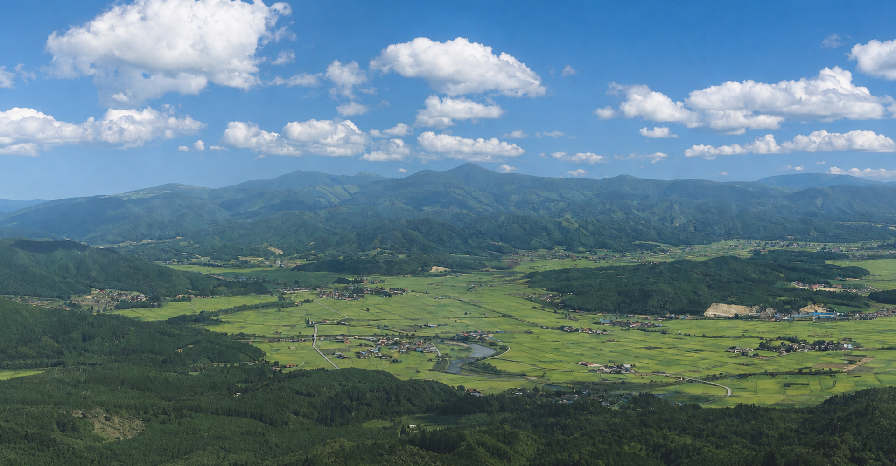
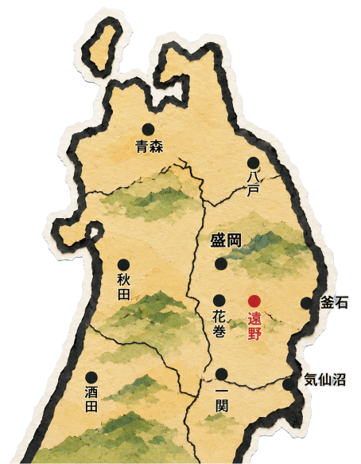
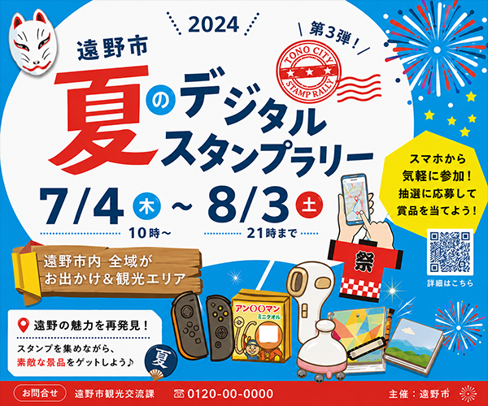
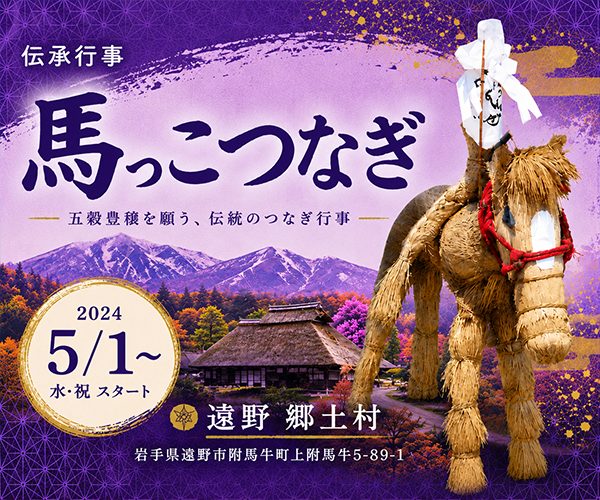
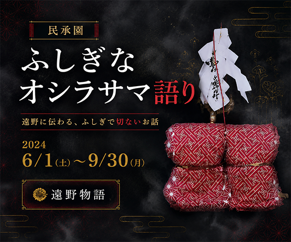
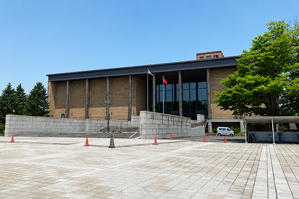
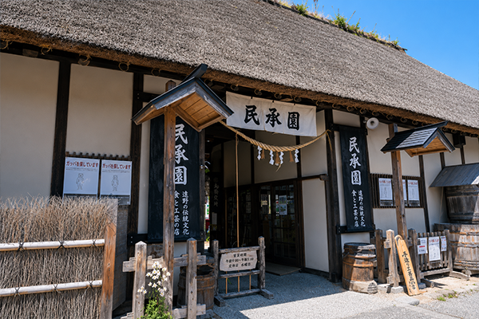
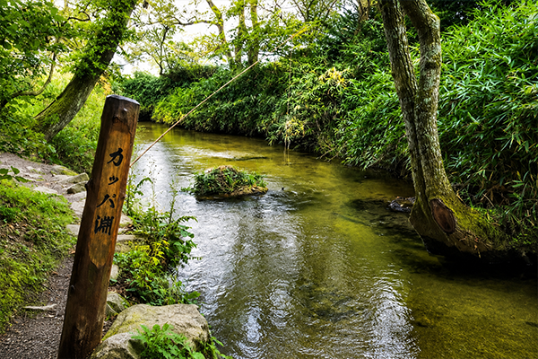
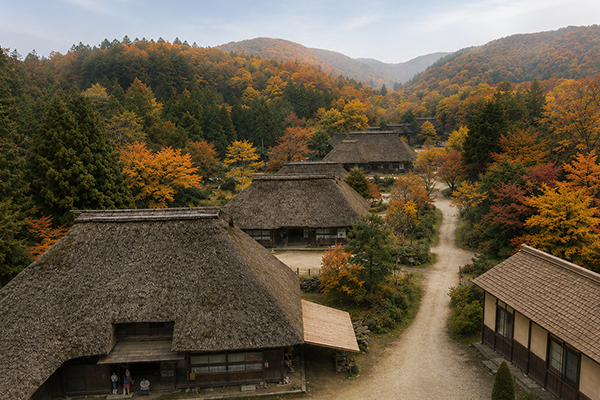

2024年6月1日（土）〜9月30日（月）、伝承園にて「ふしぎなオシラサマ語り」を開催します。


岩手県遠野市。
遠野盆地に囲まれた地に
語り継がれる物語がある。
東北の原風景の彼方へ
見えない世界への扉を
ひらいてみよう。

「遠野物語」は、遠野出身の佐々木喜善（ささききぜん）からの聞き書きを もとに明治43年、柳田國男（やなぎたくにお）によって著作された地元の 民話集です。
民俗学の先駆けといえるこの作品、創作とは違い、 当時ほんとうにあった話 として語り継がれている出来事を編集したものになります。
当時の風習、文化を知る貴重な手がかりとともに、中には不思議な話が いくつも見られるのが特徴です。
座敷わらし、河童、オシラサマ ・・・・今なお遠野市のあちこちに、彼らの存在を感じ取れる場所が 残っています。
2024年6月1日（土）〜9月30日（月）、伝承園にて「ふしぎなオシラサマ語り」を開催します。

2024年7月4日（木）〜8月3日（土）の期間で、遠野市デジタルスタンプラリーを開催予定です。

2024年5月1日（水）〜郷土村にて、伝統行事「馬っこつなぎ」のイベントを開催します。

2024年6月1日（土）〜9月30日（月）、伝承園にて「ふしぎなオシラサマ語り」を開催します。

2024年7月4日（木）〜8月3日（土）の期間で、遠野市デジタルスタンプラリーを開催予定です。

2024年5月1日（水）〜郷土村にて、伝統行事「馬っこつなぎ」のイベントを開催します。

遠野の歴史、文化を知るには、外せない博物館。
広い館内では、書籍資料だけでなく映像ギャラリーも充実。
プロジェクションマッピングを駆使した、展示様式の美しさも見どころです。
住所：岩手県遠野市○○番地２丁目

曲がり家の中、囲炉裏をかこみながら、現役の語り部から直接民話を聞くことができます。
遠野物語に編集されていない、ここでしか聞くことができないお話も多数あり。
住所：岩手県遠野市○○番地２丁目
※語り部のスケジュールは不定期です。要確認。

河童と淵神伝説で有名な河原。
現在は浅瀬で川面は澄んでいるが、かつては底を見通せないほど深かったという。
伝承では恐ろしさを感じるが、迎えてくれる河童の石像は意外にも愛嬌がある。
住所：岩手県遠野市○○番地２丁目

馬と人間が同じ建物で暮らしていた伝統住居、曲がり家。
当時のままの建物を移築し、村を形成。
実際に馬やにわとりを飼育しており、水田も有り。懐かしい原風景をゆったりと堪能できる。
住所：岩手県遠野市○○番地２丁目
